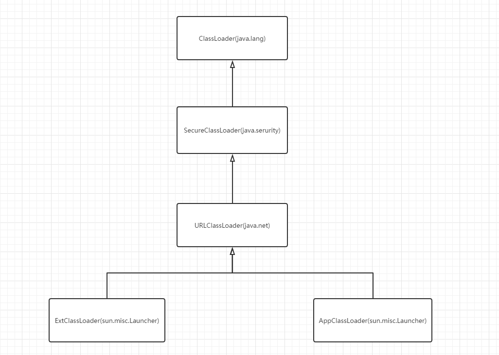

ClassLoader 基本职责
类加载器负责读取Java的字节码文件，并把它转换成一个Class实例，换句话说，也就是把类文件从硬盘load到内存中。
ClassLoader 类型
Java中主要提供三种类型的ClassLoader
- BootStrapClassLoader：C++代码编写，集成在JVM中
- ExtClassLoader：Java代码编写，sun.misc.Launcher的内部类
- AppClassLoader：Java代码编写，同样为sun.misc.Launcher的内部类
每种ClassLoader具有不同的职能，负责load不同路径下的Class,以下代码可将ClassLoader的加载路径打印出：
public class ClassLoaderTest {
public static void main(String[] args) {
URLClassPath bootStrapPath = sun.misc.Launcher.getBootstrapClassPath();
URL[] bootStrapUrls = bootStrapPath.getURLs();
System.out.println("BootStrapClassLoader加载路径如下：");
for (URL url : bootStrapUrls) {
System.out.println(url);
}
//ExtClassLoader因访问权限的问题，无法直接从Launcher中获取其实例，只能先获取AppClassLoader
//然后通过getParent()获取ExtClassLoader，这种两个ClassLoader间的父子关系后面将详细介绍
URLClassLoader extClassLoader = (URLClassLoader) ClassLoader
.getSystemClassLoader().getParent();
URL[] extUrls = extClassLoader.getURLs();
System.out.println("");
System.out.println("ExtClassLoader加载路径如下(By getURLs)：");
for (URL url : extUrls) {
System.out.println(url);
}
//通过property的记录也能获取到ExtClassLoader的加载路径
String extProperty = System.getProperty("java.ext.dirs");
if (extProperty != null) {
System.out.println("");
System.out.println("ExtClassLoader加载路径如下(By getProperty)：");
StringTokenizer strTokenizer = new StringTokenizer(extProperty,
File.pathSeparator);
int count = strTokenizer.countTokens();
for (int i = 0; i < count; ++i) {
System.out.println(strTokenizer.nextToken());
}
}
URLClassLoader appClassLoader = (URLClassLoader) ClassLoader
.getSystemClassLoader();
URL[] appUrls = appClassLoader.getURLs();
System.out.println("");
System.out.println("AppClassLoader加载路径如下(By getURLs)：");
for (URL url : appUrls) {
System.out.println(url);
}
String appProperty = System.getProperty("java.class.path");
if (extProperty != null) {
System.out.println("");
System.out.println("AppClassLoader加载路径如下(By getProperty)：");
StringTokenizer strTokenizer = new StringTokenizer(appProperty,
File.pathSeparator);
int count = strTokenizer.countTokens();
for (int i = 0; i < count; ++i) {
System.out.println(strTokenizer.nextToken());
}
}
}
}
以上代码输出结果如下：
BootStrapClassLoader加载路径如下：
file:/D:/Program%20Files/Java/jre7/lib/resources.jar
file:/D:/Program%20Files/Java/jre7/lib/rt.jar
file:/D:/Program%20Files/Java/jre7/lib/sunrsasign.jar
file:/D:/Program%20Files/Java/jre7/lib/jsse.jar
file:/D:/Program%20Files/Java/jre7/lib/jce.jar
file:/D:/Program%20Files/Java/jre7/lib/charsets.jar
file:/D:/Program%20Files/Java/jre7/lib/jfr.jar
file:/D:/Program%20Files/Java/jre7/classes
ExtClassLoader加载路径如下(By getURLs)：
file:/D:/Program%20Files/Java/jre7/lib/ext/access-bridge-64.jar
file:/D:/Program%20Files/Java/jre7/lib/ext/dnsns.jar
file:/D:/Program%20Files/Java/jre7/lib/ext/jaccess.jar
file:/D:/Program%20Files/Java/jre7/lib/ext/localedata.jar
file:/D:/Program%20Files/Java/jre7/lib/ext/sunec.jar
file:/D:/Program%20Files/Java/jre7/lib/ext/sunjce_provider.jar
file:/D:/Program%20Files/Java/jre7/lib/ext/sunmscapi.jar
file:/D:/Program%20Files/Java/jre7/lib/ext/zipfs.jar
ExtClassLoader加载路径如下(By getProperty)：
D:\Program Files\Java\jre7\lib\ext
AppClassLoader加载路径如下(By getURLs)：
file:/D:/WorkSpace/Test/bin/
file:/D:/WorkSpace/Test/libs/rxjava-1.1.1.jar
AppClassLoader加载路径如下(By getProperty)：
D:\WorkSpace\Test\bin
D:\WorkSpace\Test\libs\rxjava-1.1.1.jar
根据以上的类加载路径，可对各种类型的ClassLoader的职能总结如下：
BootStrapClassLoader:负责加载jre/lib/ 路径下的系统核心类库，如resources.jar、rt.jar等
jre/lib目录下为Java程序运行时必不可少的系统类
如rt.jar即包含了我们的常用的包如java.lang, java.util, java.io等、resources.jar为资源包，包含properties文件等
关于Jar文件的具体内容，这里不再展开，有兴趣的同学可自行探究ExtClassLoader: 负责从jre/lib/ext/ 目录下或者java.ext.dirs里指出的目录下加载Java扩展类库
AppClassLoader: 应用类加载器，加载当前工程中的类及jar包。我们开发中正常编写的Java类由它进行加载，即CLASSPATH目录下
AppClassLoader可以通过ClassLoader.getSystemClassLoader获取，我们自定义的ClassLoader的父ClassLoader即为AppClassLoader,这部分放在下面的自定义CLassLoader里详细介绍。
ClassLoader 组织结构
类继承结构
1、BootStrapClassLoader为C++代码编写，不继承自ClassLoader
2、ExtClassLoader、AppClassLoader均继承自URLClassLoader
具体继承关系如下：

层次结构
前文中提到，ExtClassLoader可由AppClassLoader通过getParent()获得，ClassLoader之间是存在父子关系的，其实这种父子关系只是逻辑关系上的，区别于类继承时父类与子类的关系，两者之间并没有实际的继承关系，而是通过getParent()进行维护。
请注意下面这段代码（摘自ClassLoader）：
private final ClassLoader parent;
public final ClassLoader getParent() {
if (parent == null)
return null;
SecurityManager sm = System.getSecurityManager();
if (sm != null) {
// Check access to the parent class loader
// If the caller's class loader is same as this class loader,
// permission check is performed.
checkClassLoaderPermission(parent, Reflection.getCallerClass());
}
return parent;
}
ClassLoader中存在ClassLoader类型的成员变量parent，根据命名我们也能猜测到是记录父ClassLoader的，通过getParent可获取该变量。
我们来看下前面提到的几个ClassLoader的父子关系，代码以及输出如下：
System.out.println("ExtClassLoader getParent(): "+extClassLoader.getParent());
System.out.println("AppClassLoader getParent(): "+appClassLoader.getParent());
输出：
ExtClassLoader getParent(): null
AppClassLoader getParent(): sun.misc.Launcher$ExtClassLoader@70d11f32